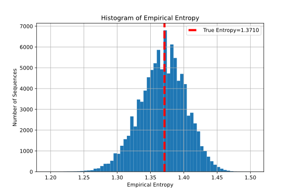
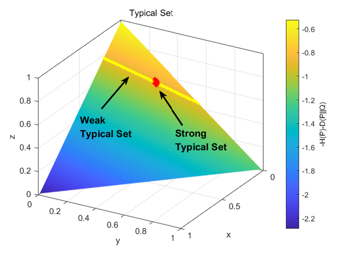
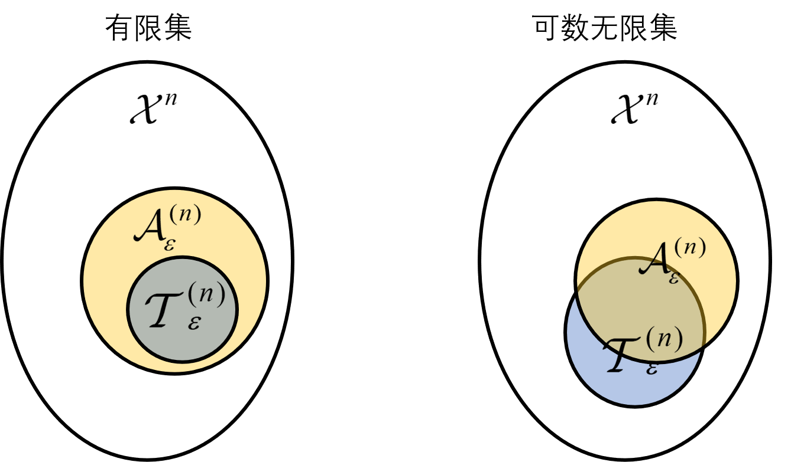

这本来已经写成了完整的文档——但博客是要去公式化的，于是贴几张有趣的图吧~~从第一次读信息论时就觉得典型集、渐近均分性是很有趣的东西，后面画了这几张图。
1 经验熵，渐近均分性与弱典型集
信源编码很大程度上建立于大样本理论之上。以最基本的香农无损信源编码定理为例，其证明就采用了典型编码，基于码长趋于无穷时码字序列体现的渐近均分性：考虑某个信源的真实分布，它产生的独立同分布序列几乎只是所有可能序列中很小的一个子集，我们只需要对这一小部分编码即可。
本章将从经验熵的角度出发，考虑信息论中渐近均分性的可视化。
1.1 渐近均分性的定义
渐近均分性（AEP，Asymptotic Equipartition Property）是弱大数定律在信息论领域中的直接应用：当序列长度充分大时，序列的经验熵将依概率收敛到信源分布的熵。在渐近均分性的基础上，仅选取经验熵相距信源真实熵只差$\varepsilon$以内的那些序列，定义典型集合，它具有性质：码长足够长时，典型集概率趋近于1；典型集中所有元素几乎等可能；典型集元素很少。
我们可以从两个可视化的视角看待上述结论：
- 考虑序列的经验分布，相当于确定了一个概率单纯形平面。当固定真实分布时，产生的序列以一种什么规律分布在整个概率单纯形？method of types拿来考虑弱典型性固然是大材小用，但也更加清晰。问题在于：若字母表的符号超过3，就难以可视化了。
- 考虑序列的经验熵（可视作type的一个确定性函数）。此时同样固定一种真实分布，产生的序列以一种什么规律分布在经验熵的数轴？这相当于前者的降维考虑，用来分析弱典型差不多够用，强典型则难以为继。好处在于，无论字母表多大，都可以直接降到1维处理。
综上考虑，本章先以第二种视角引入渐近均分性与弱典型集的可视化，随后在下一章中扩展到第一种视角，考虑渐近均分性与强典型集的可视化。
1.2 信源序列的生成与统计
首先根据特定分布生成信源的独立同分布观察序列，有三个主要的参数：信源分布、序列长度、序列个数。本文中，将固定一个信源分布，然后改变序列长度和序列个数，探究其序列经验熵的分布情况。首先生成序列：
import numpy as np
# 定义指定的概率分布
# probabilities = {0: 0.05, 1: 0.05, 2: 0.1, 3: 0.1, 4: 0.2, 5: 0.2, 6: 0.3}
probabilities = {0: 0.2, 1: 0.2, 2: 0.6}
# 生成服从指定概率分布的随机序列
def generate_sequence(length, probabilities):
symbols, probs = zip(*probabilities.items())
sequence = np.random.choice(symbols, size=length, p=probs)
return sequence
if __name__ == '__main__':
# 生成100个长度为20的序列
num_sequences = 10000
sequence_length = 30000
sequences = [generate_sequence(sequence_length, probabilities) for _ in range(num_sequences)]
# 将序列写入文本文件
file_path = "generated_sequences_4.txt"
with open(file_path, "w") as file:
for seq in sequences:
seq_str = ' '.join(map(str, seq)) # 将序列转换为字符串形式
file.write(seq_str + "\n") # 写入文件，每个序列占一行
print(f"生成的序列已写入文件: {file_path}")
然后根据对应的序列，分别计算每个序列的经验熵。在本文中，经验熵即可视为序列的统计量。举一个例子：假设信源分布为伯努利分布，此时序列的字母表为{0,1}，即一共有两个字符可能出现。那么序列的经验熵即计算该序列在{0,1}上的经验分布的熵。
然后建立其积累分布函数和概率质量函数。下图为一个概率质量函数的简单的例子：其中信源分布{ 0.2,0.2,0.6}，序列长度500，序列个数10000。红色虚线为真实熵。以0.005为间隔，统计了经验熵落在间隔内的序列的个数。
1.3 弱大数定律与中心极限定理
回顾生成序列时的三个最主要的参数：信源分布、序列长度、序列个数。本章将讨论，改变序列个数时，统计结果变化的可视化。当然，直观来看，结果应该符号中心极限定理——独立同分布下，样本数逐渐增多时，归一化的变量和收敛于正态分布。
首先确定参数：
- 信源分布{0,1,0.1,0.1,0.2,0.2,0.3}
- 序列长度 len=100
- 第一个分布为 {0.2, 0.2, 0.6}；
- 第二个分布为 {0.05, 0.05, 0.1, 0.1, 0.2, 0.2, 0.3}
下面两幅图分别仿真了序列长度为500时，两个不同分布在改变样本数量时，其经验熵的分布。样本数量从左到右、从上到下分别为：30, 100, 300, 1000, 3000, 10000, 30000, 100000, 300000。观察发现，当序列数量增加时，分布从不显著的分布逐渐趋向于正态分布。


1.4 弱典型集与渐近均分性
本章将讨论，改变序列长度时，统计结果变化的可视化。对比一下使用弱大数定律[1] (cf. Section 3.1)和中心极限定理[2] (cf. Section 3.3)时分别得到的结论：前者刻画了经验熵趋近于真实熵，后者刻画了经验熵是如何趋近于真实熵的（收敛速率）。
$$
\begin{align}
\hat{\mathbb{H} }(x^n)\xrightarrow{p} & \mathbb{H}(p) \
\sqrt{n}\left( \hat{\mathbb{H} }(x^n)-\mathbb{H}(p) \right)\xrightarrow{d} & \mathcal{N}\left( 0,\mathbb{V}(p) \right)
\end{align}
$$
按照上述结论，序列长度越长，“经验熵的分布”收敛到“以真实熵为中心的正态分布”的收敛速率就越快，仿真结果也确实证实了这一点。下面是趋于正态分布的一个直观体现。
下面两幅图分别仿真了序列数量为10000时，两个不同分布在改变序列长度时，其经验熵的分布。序列长度从左到右、从上到下分别为：30, 100, 300, 1000, 3000, 10000。
需要额外注意的是，横轴经验熵的间隔始终是0.005。因此，柱的宽度同样反映了序列的分散程度。和1.3小节对比：当序列长度增加时，经验熵显著地向真实熵聚拢，且分布形状从偏离的正态分布趋向于标准的正态分布；当序列数量增加时，分布从不显著的分布逐渐趋向于正态分布。


事实上，样本数量无关紧要，因为（至少在此处这个简化情景下）我们不做例如“用足够多的样本拟合出某个分布”这种事情——我们只处理可能很少的几个序列，并且希望这些序列都具有某些性质。幸运的是它们确实具有，这几乎就是从“渐近均分性”到“弱典型集”最核心的思想了。
弱典型集采用“经验熵”作为选取阈值，在上面的概率质量分布中，差不多就是从横轴中截取了一小段。当序列长度渐渐变长时，典型集内聚拢了越来越多的序列，直到最后，几乎每一个序列都以概率1落在典型集内了。下面的图特别显示了这一点：每一个柱的经验熵宽度都是0.005，我们围绕真实熵（也就是红色虚线）选取四个柱作为典型集：n分别为100和10000时：左图中典型集占比仅0.09左右，右图则占比0.8左右。

2 经验分布，渐近均分性与强典型集
上一章从经验熵视角看渐近均分性，但归根到底，经验熵只是经验分布的一个确定性函数，正如行列式的值只是矩阵的一个确定性函数一样——它可以体现，也只能体现一部分的特征。渐近均分性的本质还需从经验分布的视角看。那么考虑经验分布与渐近均分性的关系，可直接拆解为两个相关问题：
- 经验分布与经验熵的关系；
- 经验熵与渐近均分性的关系（可视化在上一章中已经进行讨论）。
2.1 经验分布与经验熵
当一个序列确定时，它的经验分布就确定了，因此经验分布的熵就确定了，和产生该序列的真实分布没有关系；而经验熵则是经验分布的熵，加上经验分布和真实分布的相对熵，这是两个不同的概念。总结来说，经验熵与序列概率一一对应，且是真实分布和经验分布的函数。
Method of Types的主要结论同样刻画了这一点：序列概率：
$$
Q^n\left( x \right)={2^{-n\left( D(P_X||Q)+H(P_X) \right)} }
$$
假设信源字母表阶数为3，下图在给定概率单纯形的基础上，画了两个不同信源分布时，序列概率的等值线。（左图的信源分布：{0.1, 0.3, 0.6}；右图的信源分布：{0.3, 0.3, 0.4}）另：黑色星号*标识了真实分布；红色星号*表示了在该真实分布下，概率最大的序列；蓝色星号*标识了概率单纯形的中心即均一分布。
观察发现，当信源分布改变时，序列概率的等值线变化，但始终平行于某条直线。“经验熵度量下序列的分布”因此可视作“经验分布度量下序列的分布”沿着等值线的投影。

经验熵度量下的真实熵是数轴上的一个点；经验分布下的真实分布则是高维空间内的一个点。同样地，其他所有在经验熵度量下的量或概念，转换为经验分布度量时都将被降维，例如弱典型集。
2.2 弱典型集与强典型集
这一章写了很多[4]的内容，这篇论文确实很有意思哈哈。公式太多不放了，主要结论：
正如经验熵与经验分布，弱典型集和强典型集也具有维数上的差异。这从定义中就可以发现：
- 弱典型集以经验熵为阈值，划分了经验熵数轴上的一小段，所有经验熵落在这个小范围内的序列都在弱典型集内；
- 强典型集以经验分布的每个分量为阈值，框定了高维空间内一个小正方体内的所有，所有经验分布落在这个小范围内的序列都在强典型集内。
还以上述这个三维空间内的概率单纯形为例，考虑在同一个真实分布下，弱典型集和强典型集分别框定的经验分布的范围。弱典型集对应着经验熵（概率单纯形向1维投影的一个点），在升维后就对应了比概率单纯形低1维的某个曲线。
简单讨论下二者的异同（这部分总结参考了港中文的一个PPT，里面推导了第一条）：
- 二者都具有AEP的性质，且强典型集的渐近性质强于弱典型集的；
- 弱典型集中序列经验熵收敛于真实熵，强典型集中序列经验分布收敛于真实分布。这就是定义，当然，从上图中看起来非常地显然；
- 弱典型集对可数无限字母表是良定义的，强典型集仅对有限字母表是良定义的；
第三条性质并不显然，但很有意思。直觉上若一个序列属于强典型集，那么该序列肯定属于对应的弱典型集，但事实上这仅仅在有限字母表的情况下成立。可数无限字母表时，存在属于强典型的序列，并不属于对应的弱典型集[4]。
用非常经典的典型集的示意图描述：
2.3 强典型集与渐近均分性
method of types[1] (cf. Section 11.1)有4个主要结论，第一个关于序列概率的结论在前面经验熵一节已经阐述。考虑剩下2个：
其二，型类的大小，对应下左图，画了分布的熵的等高线（指数）；
$$
\left| T(P) \right|\doteq { {2}^{nH(P)} }
$$
其三，型类的概率，对应下右图，画了确定某个分布时，其他分布到该分布的相对熵的等高线（指数）。
$$
{ {Q}^{n} }\left( T(P) \right)={ {2}^{-nD(P||Q)} }
$$
右图型类的概率就对应着强典型集的渐近均分性。相当于在弱典型集对应的切线中，只有真实分布附近一小撮经验分布（就是强典型集对应的区域）的概率特别高，其他的概率都不高。举个例子，假设真实分布为{0.1, 0.3, 0.6}，那么{0.6, 0.1, 0.3}同样在弱典型集内，但实际上出现的概率很小。这样的集合就被强典型集所摒弃了。
备注：这里画的是指数，如果画真实概率的话，应当衰减得相当快。
3 参考文献
[1] Cover T M, Thomas J A. Elements of Information Theory[M]. 1st ed. Wiley, 2005.
[2] Tan V Y F. Asymptotic Estimates in Information Theory with Non-Vanishing Error Probabilities[M]. arXiv, 2015.
[3] El Gamal A, Kim Y H. Network information theory[M]. 1. publ., repr. Cambridge: Cambridge University Press, 2012.
[4] Ho S W, Yeung R W. On Information Divergence Measures and a Unified Typicality[J]. IEEE Transactions on Information Theory, 2010, 56(12): 5893-5905.